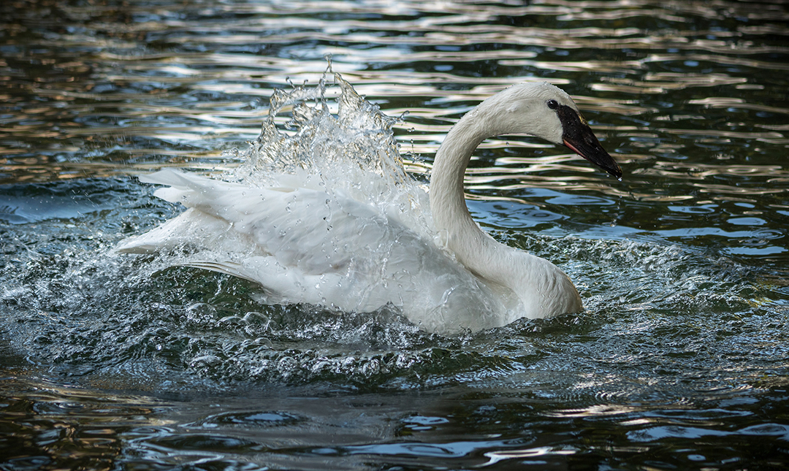
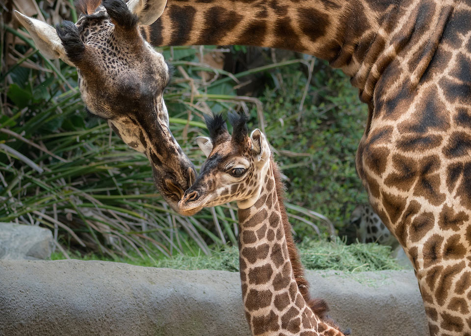
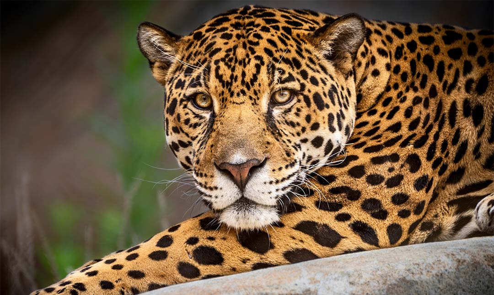
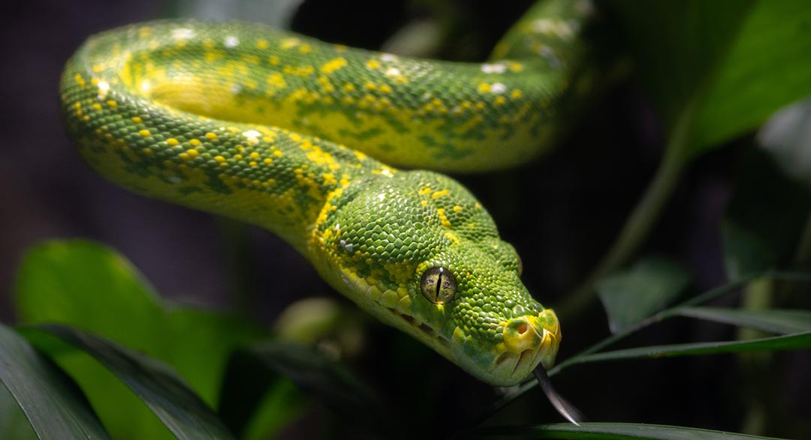
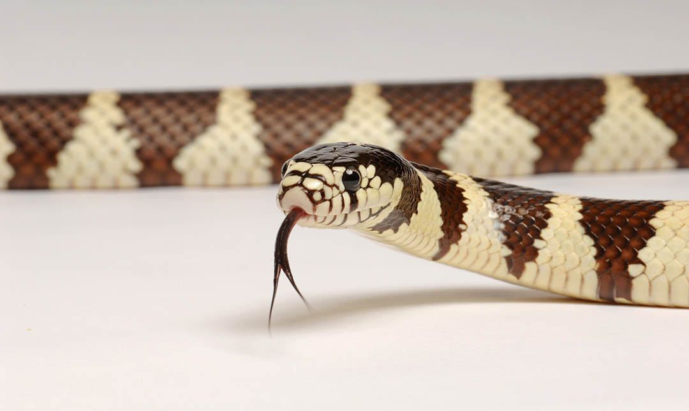
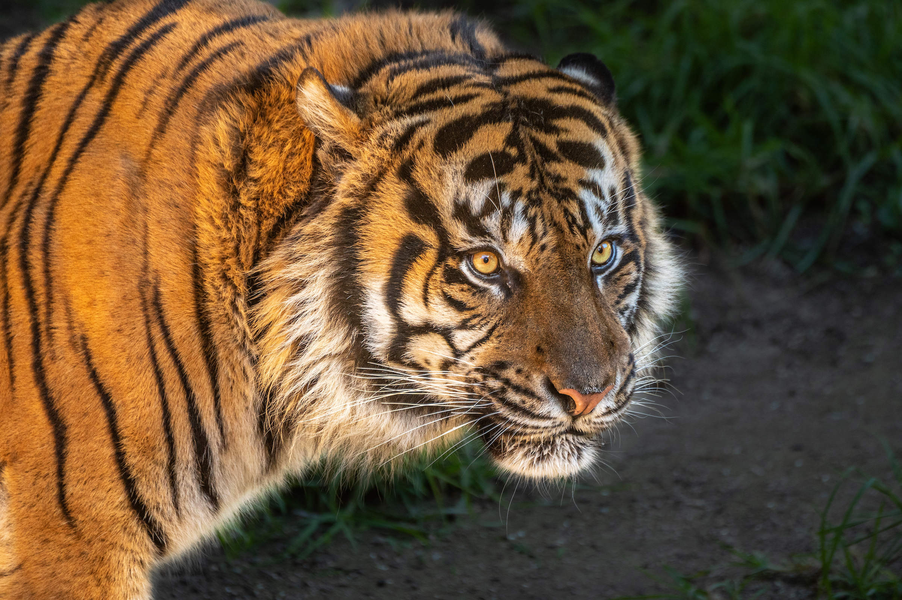

Lebăda
Cea mai mare păsare acvatică din America de Nord. O imagine a eleganței pe apă. Lebedele au fost aproape dispărute în anii 1930 din cauza vânătorii excesive pentru penele lor (folosite pentru umplutura pernelor și mănuși). Populațiile au crescut, iar aceste păsări sunt reintroduse în zone capabile să susțină, să se reproducă și să ierneze populații de lebede.

Girafa
Girafele ajung până la 18 metri înălțime, ceea ce le face turnurile de observație ale savanei. Gâturile lor le permit să mănânce frunze, flori și crenguțe pe care majoritatea animalelor nu le pot atinge.

Jaguarul
Jaguarul este cea mai mare pisică din America. Petele de jaguar diferă de cele de leopard prin faptul că formează rozete cu o pată neagră în mijloc. Blana pătată oferă camuflaj prin ruperea conturului solid al corpului unui animal, permițându-i să se camufleze cu petele luminoase și întunecate din junglă. Jaguarii vânează adesea în apă și sunt înotători excelenți.

Pitonul
Acest șarpe arboricol are multe adaptări care îl fac un locuitor de copac de succes. Cozile lungi îi ajută să se cațere și să-și ancoreze corpul de crengi. Culoarea vie se camuflează cu frunzele verzi luxuriante ale coronamentului copacilor. Sunt prădători de ambuscadă și vânează mai ales noaptea, așteptând răbdători ca prada să treacă pe lângă ei.

Șarpele Rege
De ce sunt acești șerpi regi? Acești șerpi non-veninoși își mănâncă concurența la prânz. Șarpele Rege se specializează în vânătoarea altor șerpi, inclusiv a altor specii similare. Mănâncă chiar și șerpi cu clopoței și sunt foarte rezistenți la veninul acestora. De asemenea, consumă șoareci și șobolani, făcând partea lor pentru a ține populația de rozătoare sub control.

Tigrul
Tigrii sunt prădători de ambuscadă cu vedere pe timp de noapte de șase ori mai bună decât cea umană. Vânătoarea începe la amurg, având pânză între degete și sunt buni înotători, ceea ce le permite să urmărească și să prindă prada în apă. Dungile, la fel ca petele, ajută la camuflarea în acoperiri dense.
Programul Nostru
| Luni | Închis |
| Marți-Duminică | 09:00 - 18:00 |